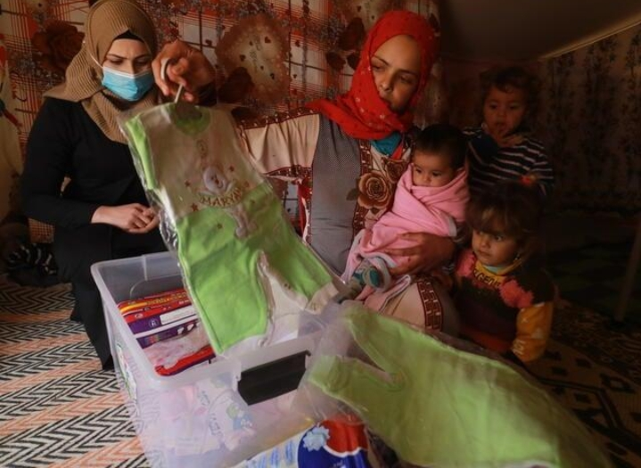

Welcome to the International Rescue Committee
Supporting people affected by conflict, disasters and humanitarian crises to survive, recover and rebuild their lives.
Learn MoreHelping People in Crisis
The International Rescue Committee works with people whose lives and livelihoods have been affected by conflict and disaster. Through humanitarian assistance and long-term support, the organisation helps communities build safer and healthier futures.
Our Areas of Support

Humanitarian Assistance
Providing essential support to people affected by emergencies.

Healthcare
Supporting access to essential health services and care.

Education
Helping children and young people access learning opportunities.
Building Stronger Communities
We believe people affected by crises deserve opportunities to recover, develop their skills and shape their own futures.
Read Our Stories